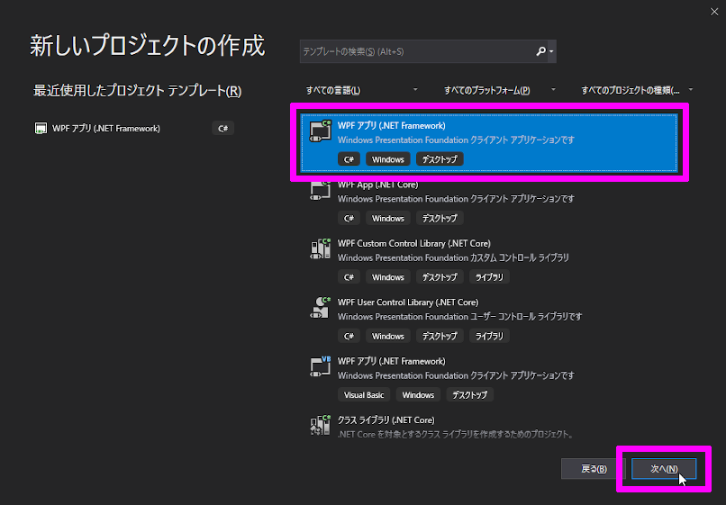
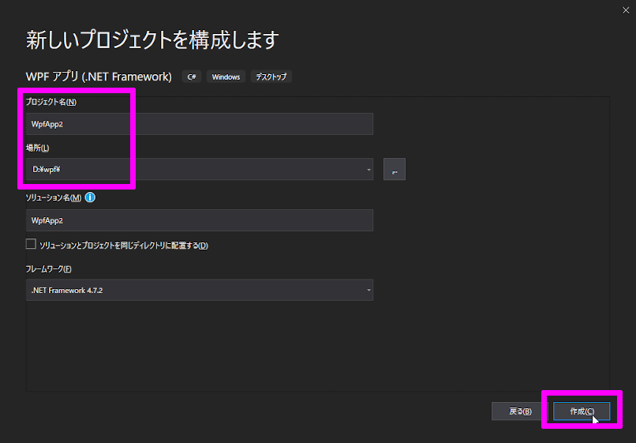
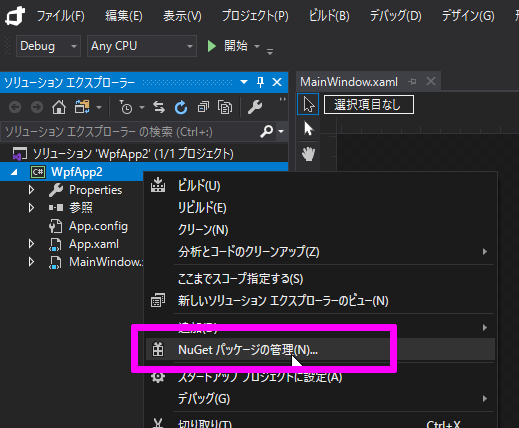
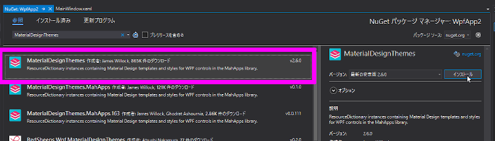
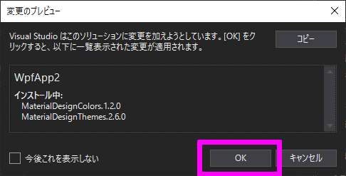
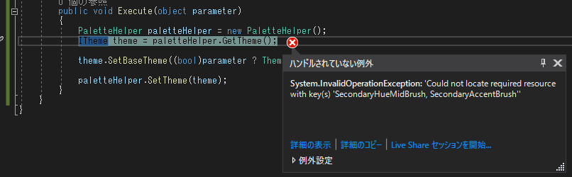

タイトルの通りのことを、練習を兼ねて Blend でやって行きます。
Blend とは Blend とは、Microsoft が出している WPF アプリ 開発 に特化した 統合開発環境(IED) のことです。
Visual Studio でも同じことが出来るので どっちを使っても大差はないです。
気持ちの違いだけなので、Blend を使っていきます。
ちなみに「Microsoft Blend for Visual Studio Community 2019」を使います。
新しいプロジェクトの作成 まず初めに、Blend で 新しいプロジェクトを作成します。
「WPF アプリ (.NET Framework)」を選択し「次へ」ボタンを押します。

「プロジェクト名」「場所」を適当に入力して「作成」ボタンを押します。

「MaterialDesignThemes」パッケージを追加 NuGet から「MaterialDesignThemes」パッケージを追加します。
左メニューのプロジェクトを右クリックし「NuGet パッケージの管理」を選択します。

参照 から「MaterialDesignThemes」を検索し インストール します。

同時に「MaterialDesingColors」も入りますが、必須なので一緒にインストールしましょう。

実装 App.xaml.cs 1 2 3 4 5 6 7 8 9 10 11 12 13 14 15 16 17 18 using MaterialDesignColors; using MaterialDesignThemes.Wpf; using System.Windows; using System.Windows.Media; namespace WpfApp2 { public partial class App : Application { protected override void OnStartup(StartupEventArgs e) { Color primaryColor = SwatchHelper.Lookup[MaterialDesignColor.Pink]; Color accentColor = SwatchHelper.Lookup[MaterialDesignColor.Pink]; ITheme theme = Theme.Create(new MaterialDesignLightTheme(), primaryColor, accentColor); Resources.SetTheme(theme); base.OnStartup(e); } } }
MainWindow.xaml 1 2 3 4 5 6 7 8 9 10 11 12 13 14 15 16 17 18 19 20 21 22 23 24 25 <Window x:Class="WpfApp2.MainWindow" xmlns="http://schemas.microsoft.com/winfx/2006/xaml/presentation" xmlns:x="http://schemas.microsoft.com/winfx/2006/xaml" xmlns:d="http://schemas.microsoft.com/expression/blend/2008" xmlns:local="clr-namespace:WpfApp2" xmlns:mc="http://schemas.openxmlformats.org/markup-compatibility/2006" Title="MainWindow" Width="300" Height="300" Background="{DynamicResource MaterialDesignPaper}" TextElement.Foreground="{DynamicResource MaterialDesignBody}" mc:Ignorable="d"> <Window.Resources> <ResourceDictionary Source="pack://application:,,,/MaterialDesignThemes.Wpf;component/Themes/MaterialDesignTheme.CheckBox.xaml" /> </Window.Resources> <Grid> <Grid.ColumnDefinitions> <ColumnDefinition /> <ColumnDefinition /> <ColumnDefinition /> </Grid.ColumnDefinitions> <TextBlock Grid.Column="0" HorizontalAlignment="Right" VerticalAlignment="Center" Text="Light" /> <ToggleButton Grid.Column="1" Command="{Binding ToggleCommand}" CommandParameter="{Binding IsChecked, RelativeSource={RelativeSource Self}}" Style="{StaticResource MaterialDesignSwitchToggleButton}" /> <TextBlock Grid.Column="2" HorizontalAlignment="Left" VerticalAlignment="Center" Text="Dark" /> </Grid> </Window>
MainWindow.xaml.cs 1 2 3 4 5 6 7 8 9 10 11 12 using System.Windows; namespace WpfApp2 { public partial class MainWindow : Window { public MainWindow() { InitializeComponent(); DataContext = new MainWindowViewModel(); } } }
MainWindowViewModel.cs 1 2 3 4 5 6 7 8 using System.Windows.Input; namespace WpfApp2 { internal class MainWindowViewModel { public ICommand ToggleCommand { get; } = new ToggleCommand(); } }
ToggleCommand.cs 1 2 3 4 5 6 7 8 9 10 11 12 13 14 15 16 17 18 19 20 21 using MaterialDesignThemes.Wpf; using System; using System.Windows.Input; namespace WpfApp2 { internal class ToggleCommand : ICommand { public event EventHandler CanExecuteChanged; public bool CanExecute(object parameter) { return true; } public void Execute(object parameter) { PaletteHelper paletteHelper = new PaletteHelper(); ITheme theme = paletteHelper.GetTheme(); theme.SetBaseTheme((bool)parameter ? Theme.Dark : Theme.Light); paletteHelper.SetTheme(theme); } } }
躓いた点 PaletteHelper の GetTheme で例外エラー トグルボタンを押した時に、PaletteHelper の GetTheme で例外エラーになりました。

1 System.InvalidOperationException: 'Could not locate required resource with key(s) 'SecondaryHueMidBrush, SecondaryAccentBrush''
原因は、事前に Theme.Create をしていないためでした。
なので、アプリを開始した直後に App.xaml.cs 内で Theme.Create をしています。
おわりに 出来るだけ最小限の機能を詰め込みました。
パッケージを使うと簡単に実装が出来て怖いですね。
ソースコード GitHub